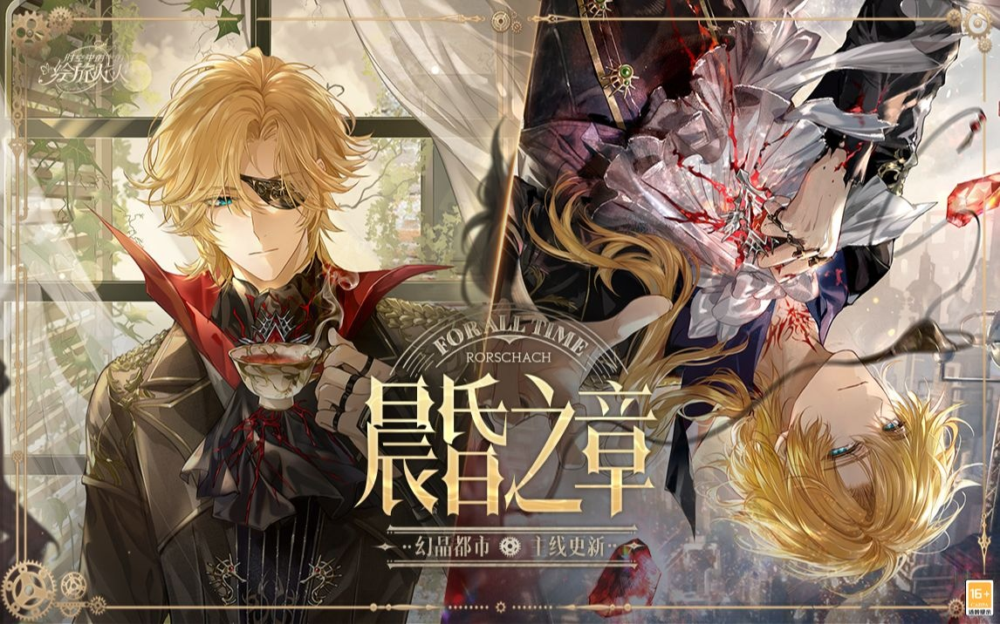

2023
10-22

vol.1【序章.列车】
我在不断行驶的列车上苏醒，我的衣着与车上其他人并无不同，仅在裙摆上有着零星的泥点和划痕，它们也许暗示着我曾遭遇追逃和战斗。
你……拒绝这种世界?原来如此。是他派你来的?——艾因
脑海中一片细密的痛感，却无法找到其缘由。这种近似于“失去”的感受只在知觉中停留了一瞬间，便烟消云散。（这里难道是和艾因的通感？艾因得知我是“他”派来的，所以感到失落吗？）
随身行李只有一个提包，包内只装着几颗手指大小的、闪烁着微光的石头——幻晶。唯一让人有些头绪的线索，是我手中紧紧握住的纸张——邀请函：幻晶能源展览会，下午三时，中央街道……
“你大可以去看看这些人是怎么折磨这星球的。”——艾因
vol.2【序章.展览会】
幻晶能源展览会，这是个关乎许多人财富和命运的展会，也包含前沿技术展示的部分。
一切话题都围绕幻晶展开，它是这座都市中最重要的矿产，与市民们的生活息息相关。
| 关于 “幻晶 ”的信息——来自展览会： 自幻晶矿产的发现已过去八百年,八百年间，人类对它的探索旧渐深入。五百年前，幻晶被首次用作燃料。十五年前，蒸汽机的发明大幅提升了幻晶能源的利用率。此后，幻晶被广泛用于工业生产使科技与生产力一同突飞猛进。 如今，这座城市繁荣发展，获得了“幻晶都市”之名。这是人类文明的盛举，也是自然造物赐予的奇迹。将幻晶用作燃料和材料,也根据其在地底形成的地脉规划城市布局。也有观点认为，幻品来自于我们尚未发现的史前文明，若能参透其中的古老知识，便可以发现与现今截然不同的科技体系,引发魔法一般的奇迹。 有传闻，有些幻晶会让人陷入疯癫，或者长睡不醒。那正是因为他们过多接触了幻晶里浑浊的部分。也就是幻晶症。“说是幻晶用得多的地方会有人昏迷或者发疯……不过官方都已经辟谣了呀，说那些案子和幻晶没有关系……” |
|---|
遇到罗夏，突然注意到我，并公然向大众提起我的身份！？
- 这位就是我跟您提到过的天才博士了。来自遥远的纳尼蔻勒,因为被小人污蔑才流落到这。她发现了幻晶的浑浊现象，却没人相信，只能用信件托我这个粗人代为炒作。博士的杰作——世上第一批能够精准操控人心的幻晶。
目前的疑点：
①艾因口中的“是他派你来的?”，这个“他”指的是谁？
②裙摆上的泥点和划痕，是谁在追杀我？
③我在这个世界的身份，到底是什么？
④罗夏的真实身份？为何他会称我为博士，难道他真的认识我？
【诡诈师.餐厅】
罗夏的身上藏着枪支和刀具。
从一开始，罗夏就不打算把那箱幻晶卖出去，只是想炒作一个“有幻晶能操纵人心”的噱头。
“我知道你曾经去过初代幻晶炉，还以非常奇特的方式凭空消失了。” ——罗夏
一位学者青年对资本家的控诉：“根本没人在乎我的研究……根本没人在乎什么科学!我宁愿和幻晶融为一体，也不想活在这个满是铜臭味的世界…”只是一瞬间，青年的身躯突然成了断线木偶，颓然倒在座椅上，又因重心不稳而滑落到地面。他顿时失去了所有的意识，却面带微笑，仿佛陷入了永远不会醒来的美梦。
罗夏的职业：诡诈师
初代幻晶炉，位于这里的东北方向，是个巨大的幻晶加工厂。罗夏曾看着我走进去，像变魔术一样原地消失。
【幻晶症.旅馆】
| “针对近日集体癔症事件的报道”： 这篇报道将近一年内的精神失常事件汇总了起来,作者将事件归为三类： 第一类，当事人突然精神失常，言语紊乱，无差别攻击周围的个体或者破坏建筑设施。其中造成损失最大的是某幻晶挖掘场的一位工人，他引发了幻晶粉尘的爆炸，导致含他在内的数十人伤亡，设备损失数额超千万。 第二类，当事人突然陷入恐慌，做出令人难以理解的自伤乃至自杀行为。 第三类，则是毫无征兆地陷入昏睡，就此长眠不醒。这些昏睡者唯一的共同点是“不得志”,他们有的被人污蔑,有的情场失意，总之平日里都表现出郁郁寡欢、消极厌世的状态。 根据作者的统计，这三类事件在时间、空间和人员上都没有显著规律。当然，这部分内容是用于驳斥“幻晶症”的说法——有学者统计了案发地的幻晶烟尘浓度，认为案发与高的幻晶烟尘浓度具有相关性，于是将这类精神失常统称为“幻晶症”。 他们认为幻晶对人脑造成了污染。这篇报道则用严密的统计计算否定了“幻晶症”的说法，并通过一些心理学的论证，将系列事件定性为原因不明的集体癔症。作者署名：“沃伦”，所属机构是警方。 |
|---|
报道末尾写着一个对市民公开的记者招待会的日期，对照日历来看就在明天。
精神失常……幻晶……我的失忆会不会也是精神失常的一种？……我醒来时包里只有幻晶，而且罗夏还拿走了，说明他觉得那些幻晶是特殊的？然没有明确证据，但我隐隐感觉，自己的情况与这些事件以及幻晶紧密地挂钩。
【幻晶症.梦.工厂】
眼前是一个巨大的工厂。
它以魁梧的身躯挺立在大地上，几乎占据了三分之一的地平线。
它的剪影像是烟囱，但没冒出一点烟尘，钢铁的外壁上爬满了暗红的侵蚀痕迹，在悄寂的风里发出呜咽般的声响。
——而我，想必是过去的我，以冷静沉稳的姿态，从旁边的树林中步行到这座废弃工厂的前方。
(这就是……初代幻晶炉?)
过去的我边走边抬头探寻着什么，似乎是在用手里的幻晶确定方向。最终，她在大门前停了下来，静静看着阴云密布的天空。十秒钟，半分钟，一分钟，天空中什么也没有发生。但忽然之间，一片黑色羽毛从虚空中落了下来。它仿佛有生命和意识，在下坠的过程中不断“生长”。断翅，双翼，整个身体，一只由黑色雾气凝聚而成的乌鸦就此
成型。它飘然下降，稳稳地落在那个我的手臂上。过去的我轻轻抚摸起它的羽毛，神情温和而友好。
(我……认识这只乌鸦?)
我还没来得及想些什么，画面突然变化。那乌鸦毫无征兆地炸为一团粘稠雾气，一瞬间便将过去的我吞
没。与此同时，黑雾所触的空间中产生了扭曲。那像是镜子破碎,镜像颠倒的场景。
不出五秒钟，黑雾和扭曲同时消失，而过去的我也原地蒸发。
【幻晶症.梦.高塔】
刚才触碰了记忆中的黑色羽毛……被从中爆发的雾气带到了这个陌生地点。
但细看起来，这里的景色其实并不陌生——面前耸立的这片纯白高塔，其大体轮廓和初代幻晶炉十分相似。
“这一定是我曾经到过的地方……我在这里……都经历过什么?”
然而在我正要奔向高塔时，肩上传来重重的触感。有谁从背后拍了我一下。那是冰冷的，如同钢铁弯钩的质感，没有一丝活物的气息。
我蓦地僵在原地，而“它”如鬼魅般无声息地贴近上来。“它”不具备任何形体，而是像烟尘一样弥漫在空中的东西。“它”的挪动带起铁链的声响，如同地底最深处的牢狱的门栓在徐徐推开。
周遭温度瞬间降至零点，一切景象变得遥远而虚无。那个存在于是贴近我的耳廓，以叹息般的声音轻轻吐出几个词语：
“所有人都幸福的世界，不好吗？”——艾因
从羽毛中“穿越”，看见梦幻般的白塔，听见乌鸦说出人话……
说起来，精神失常的其中一种就是……失意者陷入昏睡。
脑海中某些线索联系到了一起，却织出一张更加深不见底的网。
这里依然是个客观存在的世界，只是与你之前所处的现实不同。简单来说，可以将这里称为意识世界，与物质世界相对。一言以蔽之，你现在身处梦世界。这里既没有恒定的空间，也没有时间概念。
先前引导乌鸦攻击你的，就是这个世界的主人。我不知道你与他发生过什么，但这还是我第一次看到他想抓捕一个人。
【关于司岚】
很久以前，我所在的文明受到了一场灾难。那是一场横亘大陆的噩梦，令世上所有人陷入昏睡。等我醒来时已经身在这里，而我的肉身最后究竟怎么样了，没有人知道。
你的意思是说，这里是……“脱离了肉身的意识”所在的世界……你和那些乌鸦就是……失去肉身的人的意识?司岚很细微地点了头。
正如我正在见证的那样，这座庄园属于一个繁荣富庶的巫师之家.在当年，他们是世上学识最渊博的家族，隐居森林，成为传说.然而好景不长，一种神秘的精神失控症状悄然覆盖了整片大地，引发了许多匪夷所思的事件。人们认为那些失控者受到邪神操控，“莫受邪神引诱”的思潮在当时甚嚣尘上。司岚的家族却不这样认为，他们加快了探究知识的进程，并且直的获得了一些回报。
我的先祖发现了残余在人类精神中的干涉痕迹，到我的上一代，已经可以确定那是人为造成的。当然，“人为”的意思并不一定是人类造成……按照当时最普遍的说法，那就是我们找到了邪神的脚印。我的家人们循着这些脚印前进，不断深入，发现了意识世界存在的可能。
但我们终究晚了一步——一场噩梦降临了。就如司岚之前所说的，那是一场“横亘整片大陆的噩梦”。所有人在同一天陷入昏睡，无论如何都无法清醒。就算用刀砍下自己的四肢。就算浸入最寒冷的冰渊。一切人力所及的方法在这场诡异的噩梦面前，都无济于事。
在我闭上眼的前一刻，一个巨大的怪物出现在天空上。它生着金属般的骨架，长着透明以至于没有厚度的外壳。它发出了某些像是警告的笛声，但我已经听不清了。我只知道，它的利爪像一艘巨船那样大，而这艘超乎了人类认知的死神之船正在向城市倾轧。房屋变成了废墟，而我就此沉睡。我的文明就这样在睡梦中消失了。这段叙述并不复杂，我却体会到漫长的悲哀。
【疑问①】那个梦主人……和“邪神”有关吗?——大概吧。但这句语调并非含糊不清。——他也想让我沉入梦中吗?
【线索①】你在这里是作为实体存在的，也就是灵肉合一的状态。老实说，我从没见过，也不知道要怎么解释这种情况。
那天，我在餐厅里见到一个学者青年……他因为被资本愚弄数次，失去了对世界的信任，喊着“梦的国度”，在饭桌上沉睡不醒。然后，我就在梦中见到一只跟他有着一模一样声音的乌鸦，说着拥有了研究经费和大楼，带着它的“学生”们飞向白塔……那就是司岚说的……“乌鸦们都是人的意识”？而且跟司岚的文明的终点一样，在现实中展现为沉入睡梦……
说起来，沃伦大叔对精神失常事件的分类里，有一类就是“失意者沉入梦境”……许多线索在脑海里拼接重组，我似乎触碰到了真相的边缘，但依然少了些拼图。
【线索②】？？：所有人都幸福的世界，不好吗?
这些被我认知为“幻晶”的东西，被江演他们称为“魔石”。如司岚昨日所说，他所属的文明毁灭于两千多年前。这个文明有着发达的巫术，以及一套神秘诡谲的神话体系。
但我在现代从未听说过任何有关这个文明的传言。它失去了传承，被时间彻底掩埋。司岚也提到，他在梦世界还见过许多姿态各异的文明遗迹——
那么我几乎可以推断，在我们生活的这片大陆上，曾经诞生过数代互不相同的文明。它们都曾兴旺发达，但也都走向末路，断代消亡。贯穿这代代文明的能源，是幻晶/魔石。它在其他时代大概也有其他名字，在不同的代称下发挥着相同的作用。
乌鸦？……哦，是说梦主人的那些傀儡吗，他们只是些耽于美梦的家伙，没有多少真本事。那些乌鸦也都是人，不过呢，他们变成乌鸦就是因为接受了梦主人的蛊惑。听司岚说，那是梦主人给的许诺——他许诺能“实现一切愿望，治愈一切伤痛”，代价是成为他的仆从。凡是在心里接受这个许诺的人，就会化为乌鸦任凭差遣。其实这就是放弃了自我意志嘛，把心愿寄托在别人身上。
在我们那时候，钻研精深的部分学者被叫做巫师。我们就是那个时候的巫师家族。身为巫师，不该把自己没理解的东西当做神的力量，要想办法究明根源。